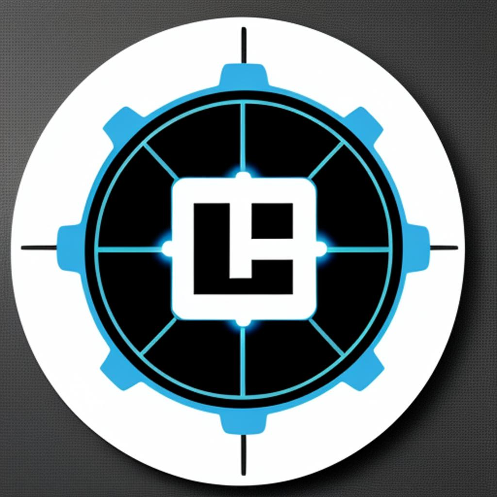

➤ What is portScan?
portScan portScan is a port scanning tool written in Python, designed for network auditing and ethical hacking. It allows you to scan open, closed and filtered ports on an IP or a range of IPs, providing detailed information about the services running on the open ports.
- Port scanning on a specific IP.
- Port scanning in a range of IPs specified in CIDR notation.
- Shows only open ports with brief details.
- Show all ports with full details using nmap.
- Export scan results to a .txt file.
- Interrupt the scan with Ctrl+C showing an output message.
Download portScan